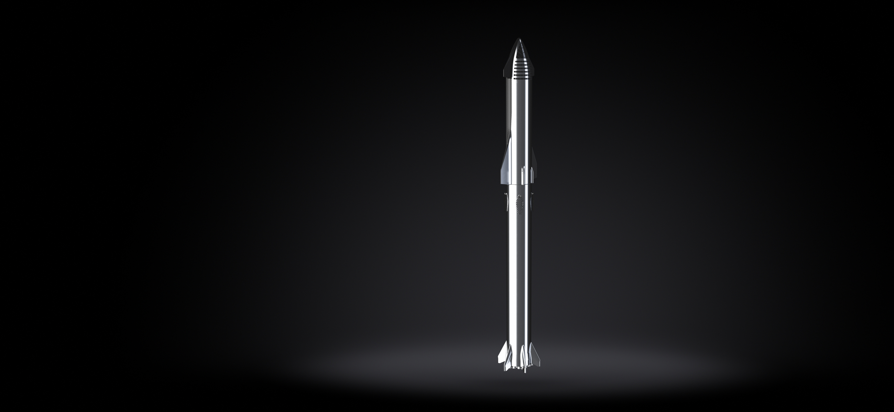
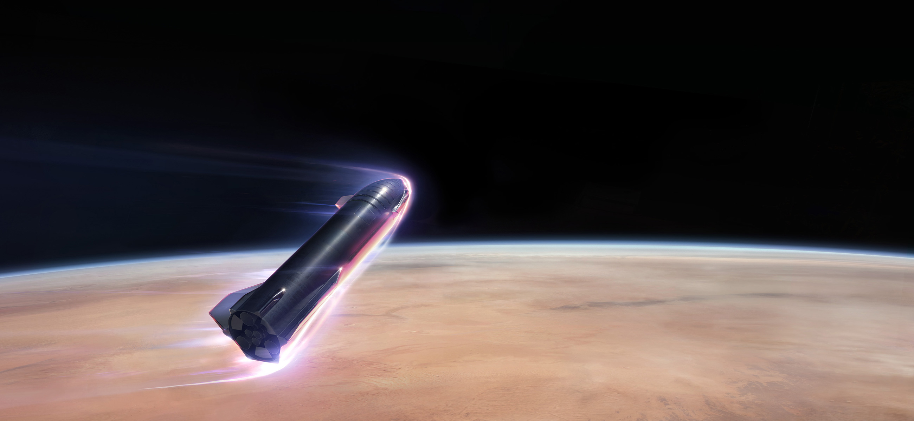
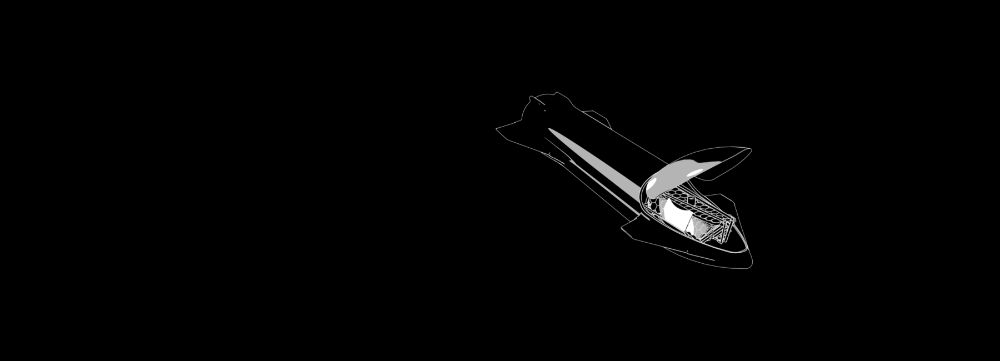

On Wednesday, May 5, 2021, Starship serial number 15 (SN15) successfully completed SpaceX's fifth high-altitude
flight test of a Starship prototype from Starbase in Texas.
Similar to previous high-altitude flight tests of Starship, SN15 was powered through ascent by three Raptor engines,
each shutting down in sequence prior to the vehicle reaching apogee - approximately 10 km in altitude. SN15 performed
a propellant transition to the internal header tanks, which hold landing propellant, before reorienting itself for
reentry and a controlled aerodynamic descent.
The Starship prototype descended under active aerodynamic control, accomplished by independent movement of two forward
and two aft flaps on the vehicle. All four flaps were actuated by an onboard flight computer to control Starship's
attitude during flight and enabled precise landing at the intended location. SN15's Raptor engines reignited as the
vehicle performed the landing flip maneuver immediately before touching down for a nominal landing on the pad.
These test flights of Starship are all about improving our understanding and development of a fully reusable
transportation system designed to carry both crew and cargo on long-duration interplanetary flights,
and help humanity return to the Moon, and travel to Mars and beyond.
Congratulations to the entire SpaceX team on SN15's successful flight and landing!

OVERVIEW
SpaceX's Starship spacecraft and Super Heavy rocket (collectively referred to as Starship)
represent a fully reusable transportation system designed to carry both crew and cargo to Earth orbit,
the Moon, Mars and beyond. Starship will be the world's most powerful launch vehicle ever developed,
with the ability to carry in excess of 100 metric tonnes to Earth orbit.
HEIGHT
120 m / 394 ft
DIAMETER
9 m / 30 ft
PAYLOAD TO LEO
100+ t / 220+ klb

LANDING ON MARS
Starship will enter Mars atmosphere at 7.5 kilometers per second and decelerate aerodynamically.
The vehicle's heat shield is designed to withstand multiple entries, but given that the vehicle
is coming into Mars' atmosphere so hot, we still expect to see some ablation of the heat shield
(similar to wear and tear on a brake pad). The engineering video below simulates the physics of
Mars entry for Starship.

STARSHIP USES
SATELLITES
Starship is designed to deliver satellites further and at a lower marginal
cost per launch than our current Falcon vehicles. With a payload compartment
larger than any fairing currently in operation or development, Starship creates
possibilities for new missions, including space telescopes even larger than the James Webb.